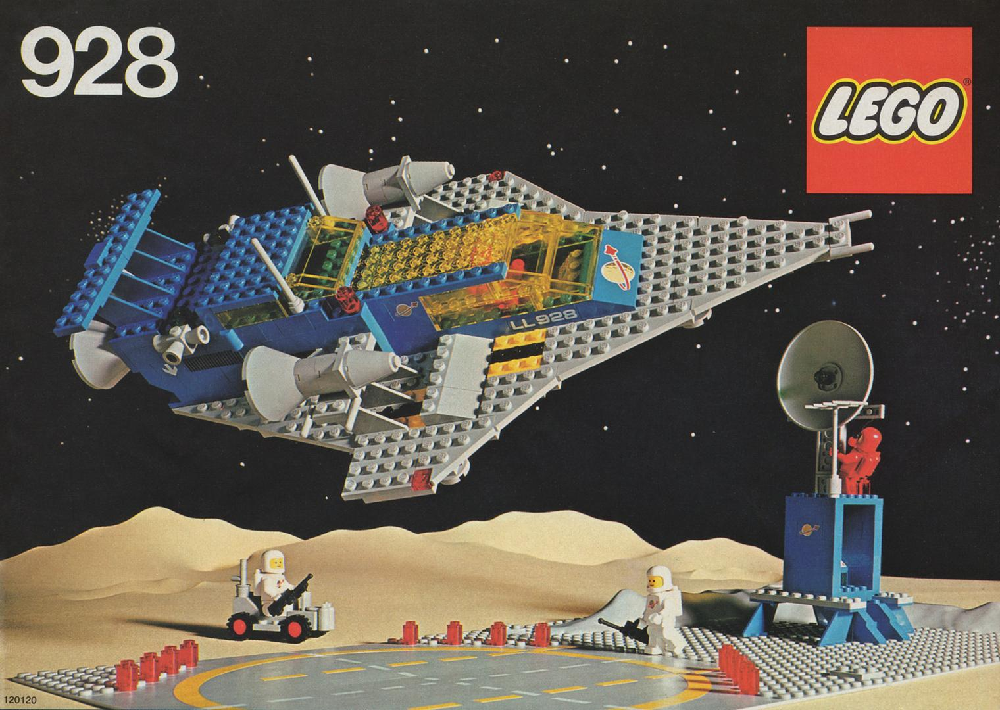
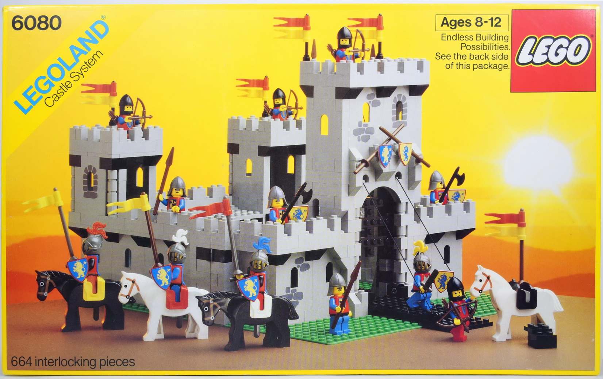
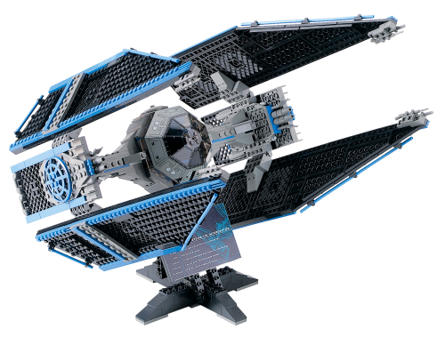
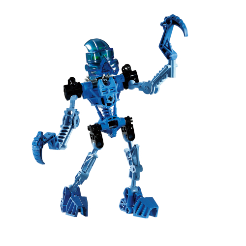
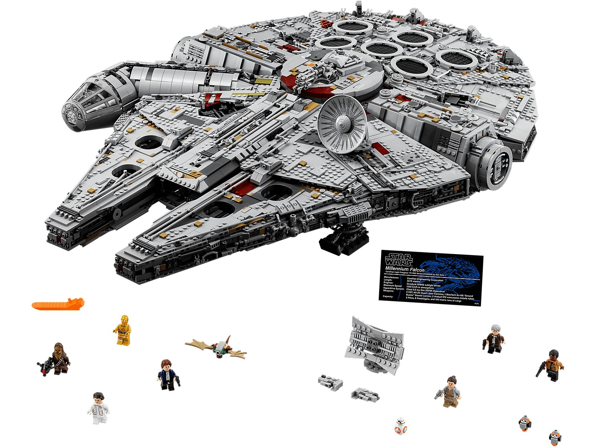
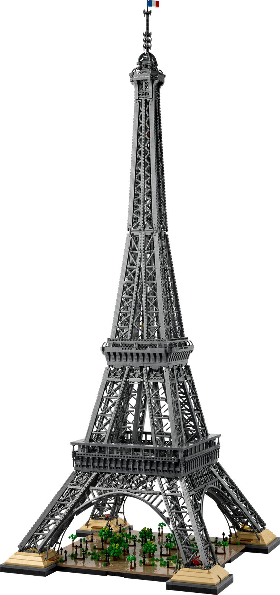
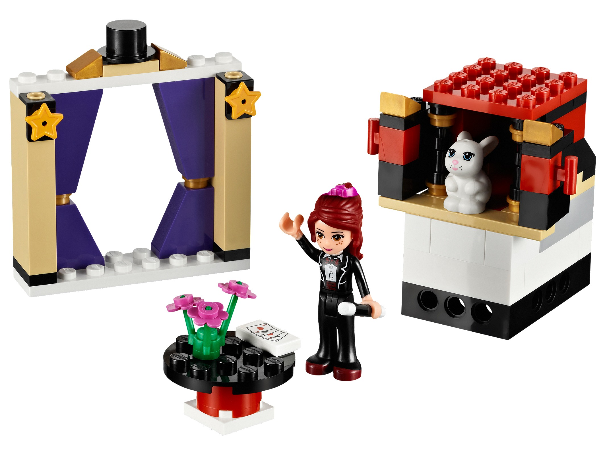

The catalog the company didn't keep
On 1 June 2016, Data Is Plural surfaced what its newsletter called "the LEGO-verse" — a fan-maintained inventory of every LEGO set, part, color, and minifigure ever produced since 1949. Ten years later, the canonical mirror is Rebrickable's daily snapshot: 26,872 sets, 62,462 distinct parts, 275 official colors, 16,741 minifigures, and a 1.5-million-row join table that says exactly which part appears in which color in which set in what quantity. None of this is data the LEGO Group itself publishes.
Rebrickable was built in 2011 by Nathan Thom, a programmer in Brisbane who emerged from his "dark age" (the LEGO community's term for the years adults stop buying bricks), bought two big Technic sets, and decided he wanted to know what else he could build with the parts he had. He wrote a database. Then he made it public. Today it has over a million users.
What follows is a reading of seventy-five years of that database. The dataset has no opinion. But it carries the receipts on every major decision LEGO has made about its product since the year plastic injection moulding cost more than the company's profits.
The first half-century
LEGO began making plastic bricks in 1949 — its first five sets are dated to that year. The bricks themselves were rough copies of a British design (the Kiddicraft Self-Locking Building Brick) that Ole Kirk Christiansen's son Godtfred refined into the stud-and-tube system patented on 28 January 1958. Everything you build with LEGO today still relies on that one 1958 patent.
For five decades the catalog grew slowly. In 1949 LEGO made 5 sets. In 1969 it made 74. In 1989 it made 131. By 1998 it had reached 401 — its first 400-set year, half a century into the company's existence.
Sets were also small. The median LEGO set in 1980 had 34 parts; in 1990 it had 54. The biggest set you could buy in any of those years was almost never above 1,000 pieces. A "big LEGO" in 1995 was a 477-piece building (the 95th-percentile set).
The 1970s and 1980s belonged to themes that look quaint now: Legoland, Town, Service Packs, Universal Building Set, Educational and Dacta. Castle dominated children's bedrooms in the mid-1980s; Space was the boys' aisle from the late 1970s through the early 1990s. Almost none of this was licensed — it was all LEGO's own intellectual property.
Annual new-set introductions (sets with num_parts > 0). The 2002–2007 valley is the 2003–2004 financial crisis showing up in the catalog. Source: Rebrickable / sets.csv.


Two bets, 1999–2001
In 1998, after six weeks of negotiations, LEGO and Lucasfilm signed a licensing deal. It was the first time LEGO had agreed to build a product line around someone else's characters. LEGO Star Wars launched in February 1999 — and first-year sales came in at five times the company's own forecast.
The numbers in the catalog match: 13 Star Wars sets in 1999, 23 in 2000, then a steady 30 to 70 new Star Wars sets every single year through 2024. The line has been astonishingly stable as a share of LEGO's annual output — between 3% and 7% of all new sets, in every year of this century.
At the same time, LEGO bet on a second strategy: an in-house epic franchise called Bionicle and a new "Ultimate Collector Series" of giant, expensive, deliberately adult-oriented Star Wars sets. Bionicle launched as a Christmas 2000 test market and earned the company about £100 million in its first global year. UCS launched with two grayscale-boxed sets in 2000 — the TIE Interceptor (7181, 703 pieces) and X-wing Fighter (7191).
Bionicle is the clearest single-theme arc in the dataset. It launched at 46 sets a year, peaked at 63 in 2003 (during LEGO's worst financial year, which is not a coincidence), held above 30 sets a year through 2009, and then collapsed to 6 sets in 2010 before its discontinuation. A brief reboot in 2015–2016 added 50 more sets, and then the line was retired for good. Total: 468 sets — more than Castle (267) and inside spitting distance of every Marvel set ever made (337).
Star Wars in the catalog: yellow bars are absolute set counts, the black line is share of all new sets that year. The share line stays inside 3–7% for a quarter-century.
Bionicle set introductions per year — 13 active years across two product cycles.


The crater, and the great recolor
By 2003 the LEGO Group was losing about $1 million per day. It carried roughly $800 million in debt, posted a 26% decline in net sales, and reported a $300 million loss. The cause was overextension — theme parks, clothing, video games, a SKU catalog of 13,000 distinct products that the company could not manufacture profitably. A 35-year-old former McKinsey consultant named Jørgen Vig Knudstorp took over as CEO in 2004 and cut the SKU count nearly in half within two years.
The catalog shows the crisis as a long valley. New-set introductions (filtered to sets with positive part counts) dropped from 511 in 2002 to 291 in 2007 — a 43% decline. Recovery to 500 a year did not happen until 2013, ten years after the trough.
In the middle of that crisis, in 2004, LEGO did something the AFOL community would never forgive: it changed the grays. The old Light Gray that had been the structural color of every LEGO castle, train, and spaceship since 1954 was replaced with a slightly bluer "Light Bluish Gray". Dark Gray became Dark Bluish Gray. Brown became Reddish Brown. The fan community nicknamed the new shades "bley" — short for "blue-grey" — and the term stuck.
The switchover in the data is brutally fast. Old Light Gray peaked at 10,388 placements in 2002 and 9,283 in 2003; in 2004 it crashed to 1,316 — an 87% same-year drop. By 2005 it was at 228, and from 2007 onwards it appears in exactly zero new sets. The new Light Bluish Gray went from 0 placements in 2002 to 6,689 in 2004 to 37,790 in 2024 — making it the second most-used color in the entire 75-year catalog, behind only Black.
The same crisis-era rationalisation cut the live palette nearly in half. The number of distinct colors appearing in new sets peaked at 113 in 2004 and dropped to 64 by 2007. Knudstorp's "do less" mandate applied not just to product lines but to the box of crayons LEGO was painting with.
(old)
(old)
(old)
(new)
(new)
(new)
Each block is sized by quantity placed in that year, across all LEGO sets in inventory_parts.
Distinct colors used in new sets per year. The 2004 peak is the moment both old and new grays were in use simultaneously; the post-2007 floor reflects the deliberate cull.
Sets got serious
The 2000 launch of the Ultimate Collector Series was LEGO's first explicit product line for adult builders — grayscale boxes, premium prices, set sizes that the children's market would never have absorbed. The line's logic ran in only one direction: bigger.
Sixteen of the twenty largest LEGO sets ever made were released in 2017 or later. The record holder is the Art World Map (31203, 2021) at 11,695 pieces. The 2022 Eiffel Tower hits 10,001 pieces and stands 1.5 metres tall. Three other 2020–2024 sets cross 9,000 pieces. The list is overwhelmingly Icons (the renamed "Creator Expert" line targeting adult builders) and UCS Star Wars.
The shift is visible in the medians too. In 1980 the typical LEGO set had 34 parts; in 2020 it had 68. Then something accelerated. In 2023 the median jumped to 144.5 and in 2024 to 159 — a 4.7x increase over 1980. The 95th-percentile set went from 500 pieces in 1980 to 1,627 in 2024. LEGO is not just making a few enormous sets for the display shelf; the entire production line is moving upmarket.
The new "bley" colors LEGO retconned into the catalog in 2004 are now structurally embedded in this larger-set economy. With twenty years on the books versus everything else's fifty, Light Bluish Gray is the #2 most-placed color of all time (577,174 placements) and Dark Bluish Gray is #4 (412,490). The old grays they replaced rank #10 and lower.
Top 20 LEGO sets by piece count. Color encodes year — older sets blue, newer sets red. 16 of the 20 came out in 2017 or later.
Median and 95th-percentile set size by year, log scale (sets with num_parts > 0).


The pink permission
In January 2012 LEGO launched a line called Friends — its first deliberate attempt to sell construction toys to girls. The line used a slightly taller minifigure called a "mini-doll", pastel colors, and themes built around café, salon, and friendship-circle play. It tripled the share of LEGO purchases made for girls in the United States within a year, from 9% to 27%. It also triggered an activist petition called Spark Movement that collected 50,000 signatures arguing the line reinforced gendered marketing.
The dataset shows something the public debate missed. Before 2012, LEGO used very little pink — the pink-and-lavender share of all new parts placed hovered below 1% across the entire history of the catalog. After Friends launched, the share rose, predictably. But the surprise is where the growth went. By 2024, Friends sets used about 1,133 pink-family parts per year. Every other LEGO theme combined used 7,879. The Friends launch didn't just create a "pink shelf" for girls — it changed what colors LEGO felt licensed to use in every other product, from City to Star Wars.
Whether that counts as a feminist victory or a feminist loss depends on which 2012 essay you found persuasive. What the dataset shows is that the permission structure shifted decisively, and it did not roll back.
Pink, lavender, magenta and violet parts placed per year, 2005–2024. Friends sets in dark pink; every other theme combined in lavender. The catalog leaned pink after Friends, but Friends is not where most of the pink ended up.

What seventy-five years tell us
Six colors are still in active use in the LEGO catalog that have been there since 1949: Blue, Green, Red, Yellow, White, and Bright Green. Black joined them in 1957 and is now the most-placed color of all time, with 920,517 cumulative units across every inventory ever recorded. The other 159 colors that have ever existed have all been retired.
The most-placed part in LEGO history is the humble Plate 1×2 (part 3023), with 165,871 placements. The top 20 parts are all basic geometry — plates, bricks, tiles, and one slope. The fancy parts make up the volume, but the bricks make up the structure.
The themes have changed completely. In 1985 the biggest play themes were Town, Castle, and Space — all of them LEGO originals. In 2024 the biggest play themes are Star Wars, City, Friends, Ninjago, Marvel, Harry Potter — and Star Wars has been a steady 4–7% of new sets every year for the last quarter-century. Most LEGO sales today are licensed, and most of the largest sets in the dataset are aimed at the same adults who came back from their "dark age" in their thirties.
The community that maintains this catalog wasn't supposed to exist. AFOLs — Adult Fans of LEGO — emerged in late-1990s online forums (LUGNET, BrickLink, then Rebrickable), and the LEGO Group itself didn't acknowledge adult fans as a customer segment until the company nearly went bankrupt and was forced into grassroots marketing because it could no longer afford the alternative. Out of that necessity came UCS, Icons, Lego Ideas, and the "Adults Welcome" marketing umbrella that now sells 10,000-piece Eiffel Towers directly to grown-ups. The dataset is a story about LEGO. But it is also a story the community had to write itself, because nobody else was going to.
Top 20 LEGO colors by total quantity placed across the catalog. Each bar is painted in that color's actual RGB hex. Black tops the list; the new 'bley' grays from 2004 already sit at #2 and #4.